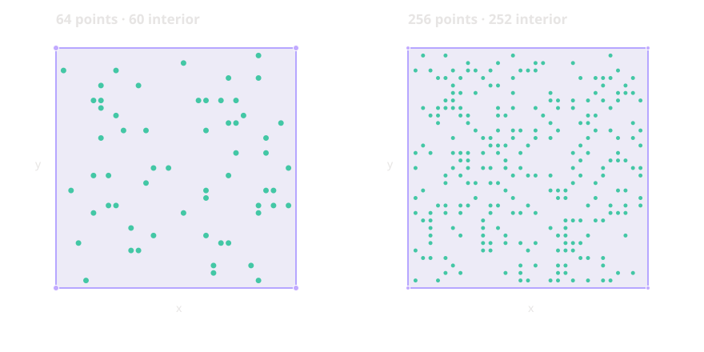

Verdict: inconclusive as a performance comparison. This bounded 2D pilot establishes passing geometry outcomes for the A44 v2 implementation on two interior-heavy square clouds. It does not support a general speed or scalability claim.

Five measured attempts per method and fixture, plus one warmup per method and fixture. Medians and ranges below include only attempts that passed all driver and independent hull checks. Failed attempts remain in the raw files and are counted in the table.
| Fixture | Method | Passes | Failures | Retained points | Passing median (ms) | Passing range (ms) | LP calls, median |
|---|---|---|---|---|---|---|---|
| dyadic-square-n256 | A43-certificate-safe-basis-adaptation | 0/5 | 5 | 123 | — | — | 125 |
| dyadic-square-n256 | A44-incremental-LP-farthest-seed | 5/5 | 0 | 4 | 27.898 | 27.641–30.981 | 257 |
| dyadic-square-n256 | basis-reuse-related-to-A43 | 5/5 | 0 | 125 | 0.755 | 0.739–0.851 | 0 |
| dyadic-square-n256 | geometric-quickhull | 5/5 | 0 | 4 | 0.563 | 0.547–0.567 | 0 |
| dyadic-square-n256 | lp-membership-baseline | 0/5 | 5 | 255 | — | — | 256 |
| dyadic-square-n256 | ordered-membership-related-to-A44 | 0/5 | 5 | 255 | — | — | 256 |
| dyadic-square-n64 | A43-certificate-safe-basis-adaptation | 0/5 | 5 | 34 | — | — | 34 |
| dyadic-square-n64 | A44-incremental-LP-farthest-seed | 5/5 | 0 | 4 | 7.129 | 7.083–7.190 | 65 |
| dyadic-square-n64 | basis-reuse-related-to-A43 | 5/5 | 0 | 34 | 0.229 | 0.211–0.246 | 0 |
| dyadic-square-n64 | geometric-quickhull | 5/5 | 0 | 4 | 0.140 | 0.140–0.141 | 0 |
| dyadic-square-n64 | lp-membership-baseline | 0/5 | 5 | 64 | — | — | 64 |
| dyadic-square-n64 | ordered-membership-related-to-A44 | 0/5 | 5 | 64 | — | — | 64 |
Passing rows: geometric QuickHull, phase-one basis reuse, and A44 v2. The LP baseline, ordered membership, and A43 certificate-safe adaptation failed their completion checks on every measured attempt. Their diagnostic elapsed times are not performance results. A44 v2 passed 5/5 at both sizes and retained the four expected corners.
A44 v2 follows the paper's described k+1 seed and normalized Euclidean distance score, choosing farthest-first to resolve the paper's conflict between its “increasing distance” sentence and its description of the first k+1 points as farthest. Every removal remains authorized by an exact binary64 convex-combination certificate. The final retained hull is independently checked against all source points. Its identity is csl.hull.itis17.a44-incremental-lp@2.0.0; earlier v1 measurements remain distinct.
Release build, GCC 16.2.1, HiGHS 1.11.0, one LP solver thread, serial execution on an 8-logical-CPU AMD Ryzen 5 3550H host. The measured interval covers reducer calls; LP workspace creation and output verification are excluded. No resource limiter was enforced. A separate unreported profile observed the process near 100% of one logical CPU. A44 v2 made a median of 65 and 257 LP calls on the 64 and 256 point clouds, respectively; LP solving is the likely limiter, but the profiler did not sample source functions. This is not an end-to-end measurement.